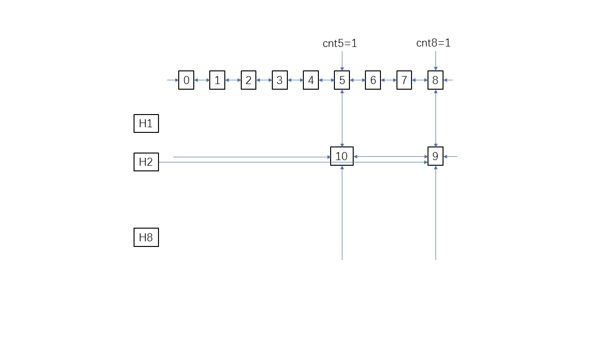
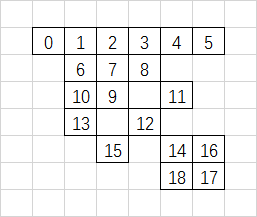

题意：n个敌人，m对敌人是朋友，之后m行给出u与v是朋友，当攻击某个敌人时，他的朋友也可以被打死，问最少攻击几次可以将所有的敌人消灭。
Github: https://github.com/wmpeng/Algorithm
比较裸的一道舞蹈链题目，重复覆盖问题，需要进行剪枝。

对于这道题，舞蹈链中的节点的意义是，如第9个点表示 2&8 是朋友，第10个点表示2&5是朋友。
对于第一组样例输入：1
2
3
4
55 4
1 2
1 3
2 4
4 5
首先，在预处理中把每个点设为自己的朋友。对于每组关系，表示为互为朋友。另外，id=0~n的点为辅助元素，因此有如下的交叉十字循环双向链：

每次都找包括元素最少的一列，如这里的第3列。因为每个敌人都要背打到，即点都需要被覆盖到，所以想要把第3个敌人打到就是要把第3个点覆盖到，就要选第8或第12个点，它们对应的行为1和3，代表想要覆盖第3个敌人，可以通过直接打击第1或者第3个敌人（这就是为什么要把每个人先设置为自己的敌人）。
先尝试选第8个点，即打第1个敌人，那么第6，7，8点都会被覆盖到，而这些点所在的列（包括这个列上的点）都需要被删除。
实现过程为通过8，找8所在行的每一个节点，调用remove()函数，删除这个点所在的列上的所有点（没有包括这个点，因为删不删没有区别，这个点在后面不会有任何影响）。过程如下图所示

递归过程中记得剪枝，不然会超时。1
2
3
4
5
6
7
8
9
10
11
12
13
14
15
16
17
18
19
20
21
22
23
24
25
26
27
28
29
30
31
32
33
34
35
36
37
38
39
40
41
42
43
44
45
46
47
48
49
50
51
52
53
54
55
56
57
58
59
60
61
62
63
64
65
66
67
68
69
70
71
72
73
74
75
76
77
78
79
80
81
82
83
84
85
86
87
88
89
90
91
92
93
94
95
96
97
98
99
100
101
102
103
104
105
106
107
108
109
110
111
112
113
114
115
116
117
118
119
120
121
122
123
124
125
126
127
128
129
130
131
132
133
134
135
136
137
138
139
140
141
142
143
144
145
146
147
148
149
150
151
152/*
* hdu 3498 whosyourdaddy
* 舞蹈链(dancing links),估值，剪枝
* 题意：有n个单位的敌人，给出谁和谁相邻，对某个敌人进行攻击时该敌人以及与其直接相邻的敌人都会被消灭。
* 是一个比较明显的重复覆盖问题
*/
using namespace std;
int L[MAXN*MAXN], R[MAXN*MAXN], U[MAXN*MAXN], D[MAXN*MAXN];//四个方向链表
int C[MAXN*MAXN];//记录每个节点属于哪一列
int H[MAXN];//用来记录这一行的其中一个节点
int cnt[MAXN], vis[MAXN];//cnt列链表中的元素个数
vector<int> E[MAXN];
int n, m, id, fans;
/*初始化*/
void init()
{
for (int i = 0; i <= n; i++)
{
E[i].clear();
E[i].push_back(i);
cnt[i] = 0;
U[i] = D[i] = i;
L[i + 1] = i;
R[i] = i + 1;
}
R[n] = 0;
id = n + 1;
memset(H, -1, sizeof(H));//head填充-1
}
/*把r,c加入到十字链中*/
void link(int r, int c)
{
cnt[c]++;
C[id] = c;
U[id] = U[c];
D[U[c]] = id;
D[id] = c;
U[c] = id;
if (H[r] == -1)
H[r] = L[id] = R[id] = id;
else
{
L[id] = L[H[r]];
R[L[H[r]]] = id;
R[id] = H[r];
L[H[r]] = id;
}
id++;
}
/*删除列*/
void remove(int size)
{
for (int j = D[size]; j != size; j = D[j])
{
L[R[j]] = L[j];
R[L[j]] = R[j];
}
}
/*恢复列*/
void resume(int size)
{
for (int j = D[size]; j != size; j = D[j])
L[R[j]] = R[L[j]] = j;
}
/*估值函数 返回最少需要多少次才能结束*/
int h()
{
int sum = 0;
memset(vis, 0, sizeof(vis));
for (int i = R[0]; i != 0; i = R[i])
{
if (vis[i])
continue;
sum++;
for (int j = D[i]; j != i; j = D[j])
for (int k = R[j]; k != j; k = R[k])
vis[C[k]] = 1;
}
return sum;
}
void dance(int k)//已经走了k步，继续往下搜索
{
int mm = MAXN, pos;
/*剪枝
*已经走的加上至少需要走的已经超过现在找到的最优解，那么继续找下去也不可能是最优解*/
if (k + h() >= fans)
return;
//cout << "R[0]="<<R[0] << endl;
if (R[0] == 0)//已经是一个解
{
//cout << "!"<< endl;
if (k < fans)
fans = k;
return;
}
//选最少的一列
for (int i = R[0]; i != 0; i = R[i])
if (mm > cnt[i])
{
mm = cnt[i];
pos = i;
}
//尝试这一列的每一个点,找最优解
for (int i = D[pos]; i != pos; i = D[i])
{
remove(i);
for (int j = R[i]; j != i; j = R[j])
remove(j);
dance(k + 1);
for (int j = R[i]; j != i; j = R[j])
resume(j);
resume(i);
}
}
int main()
{
int u, v;
while (scanf("%d %d", &n, &m) != -1)
{
init();
for (int i = 0; i < m; i++)
{
scanf("%d %d", &u, &v);
E[u].push_back(v);
E[v].push_back(u);
}
for (int i = 1; i <= n; i++)
for (vector<int>::iterator it = E[i].begin(); it != E[i].end(); it++)
link(i, *it);
fans = n;//最差解
dance(0);
printf("%d\n", fans);
}
return 0;
}